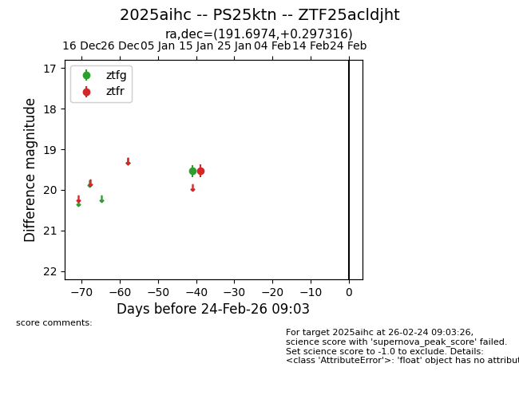
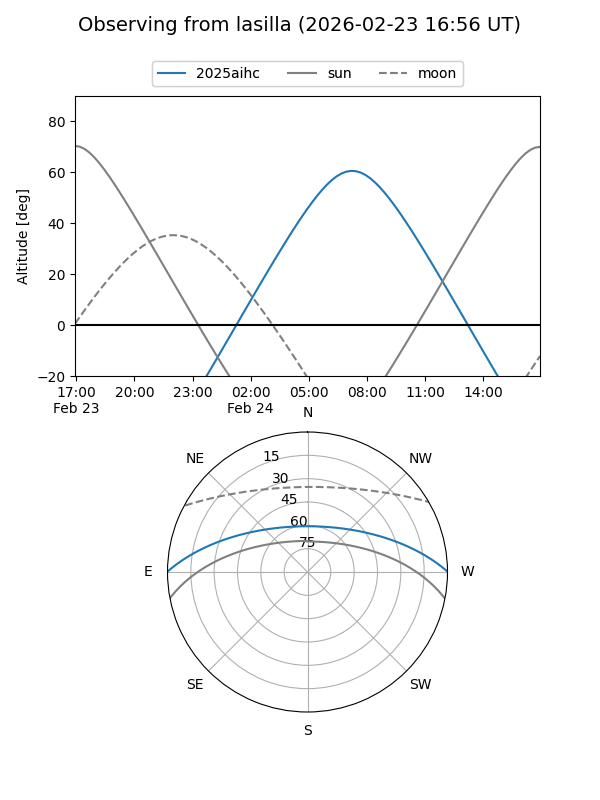
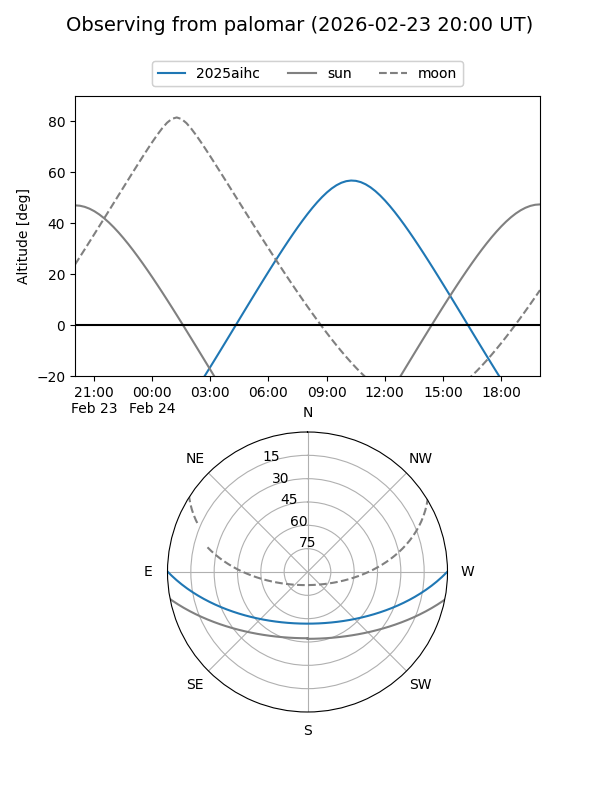

2025aihc
Target 2025aihc at 2026-01-14 12:50
Aliases and brokers:
FINK: link
Lasair: link
ALeRCE: link
TNS: link
YSE: link
alt names
ZTF25acldjht (ztf,fink_ztf)
2025aihc (tns,yse)
PS25ktn (panstarrs)
Coordinates:
equatorial (ra, dec) = 191.6974,+0.29732
equatorial (HMS+DMS) = 12:46:47.37,+00:17:50.34
galactic (l, b) = (300.3586,+63.14584)
Flags:
Photometry:
last ztfg=19.53
1 ztfg detections
Lightcurve

Visibility


Additional plots